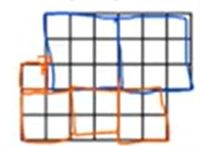
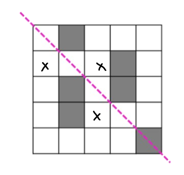

Please enter the access code to view the holiday test solutions:
Incorrect code. Please try again.
Tens value = 90
90 – 38 = 52
3/8 + 5/12 + 7/10 = 45/120 + 50/120 + 84/120 = 179/120 = 1 59/120
First scale: 300ml + 2 Glasses = 270g
Second scale: 180ml + 2 Glasses = 210g
120ml = 60g, thus 60ml = 30g.
For the third scale: 60ml + Glass = 90g, Glass = 90g – 30g = 60g.
There is one prime number (2) so unlikely.
6 squares are needed to make this grid.
Volume of one cube = 864/4 = 216. Thus the side length is 6cm.
There are 24 square edges, so 24 × 6 = 144cm.
Total Volume: 120 + (120 × 7) = 120 × 8 = 960ml = 0.96L
Temperature drops by 3 degrees every hour. 18→15, and so on
Answer is A. Three quarter turns counter clockwise means to rotate anticlockwise (left) 3 times 90 degrees.
100% - (10% + 10% + 25% + 25%) = 2x
2x = 30%
x = 15%
Pattern: We do number inside minus one to give the number in the sequence.
Number inside – 1 × 3 = number outside
35 – 1 = 34 × 3 = 102
Number inside – 1 × 3 = number outside
Number inside – 1 × 3 = 81
Number inside = 81/3 + 1 = 27 + 1 = 28
Total hours per week: 4h 20m × 3 = 13 hours.
In 6 months or half a year: 26 weeks × 13 = 338 hours
Straight angle = 180°
180° - 60° = 120° = larger angle of trapezium
360° – (120° + 120°) = 120°
2x = 120°, x = 60 degrees.
Maximize the 50 pack:
2 packs: $15 + $15 = $30 → 50 + 50 = 100 marbles.
With the $7.75 left, we can only get 2 more 10 packs, which leaves 75 cents leftover. → 10 + 10 = 20 marbles.
With the 75¢ left we can get 2 individual marbles leaving 1 cent left over.
In total: 100 + 20 + 2 = 122 marbles.
Answer is C. Only one fold in half
Matching it on the axis, the sales value is halfway between 9000 and 12000 which is 10500.
Tammy: 4km/30min = 8km/hr
Kars: 2km/hr
2/8 = ¼ = 25%
Pentagonal pyramid or cube/rectangular prism all have 6 faces. But pentagonal pyramid gives edges in decimals as it has 10 edges so it must be a cube as it has 12 edges.
¾ - 2/3 = 9/12 – 8/12 = 1/12 of the room completed in 30min.
He has ¼ left or 3/12 left so it will take 30 × 3 = 90min. 2:30pm + 90min = 4pm.
Since all rectangles are same size, 270/5 = 54cm².
2x = 3y, the ratio of sides is 2:3 and the numbers multiply to 54, thus it is 6:9.
Perimeter: 6 + 6 + 9 + 9 = 12 + 18 = 30cm
Red: 0.2 × 80 = 16
Yellow: 0.3 × 80 = 24
Blue: 0.1 × 80 = 8
Green: 0.25 × 80 = 20
Total so far is 68. The remaining is orange, 80-68 = 12
A-53, E-21, T-15. Total: 89, remaining 164-89 = 75
Marge = 3 × Mary
Jacob = Mary – 5
Mary + Jacob + Marge = 75, substitute for the equations above, thus;
Mary + 3 × Mary + Mary – 5 = 75
5Mary = 80, Mary = 16. Jacob is 16 – 5 = 11 years old
54/2 = 27. The numbers are 26 and 28. 28 – (1/2 × 26) = 28 – 13 = 15.
Total walking speed: 75 + 95 = 170m/min.
3740/170 = 22 minutes.
See diagram with diagonal line
To see the students writings click here: Student Writings
Superhero Writing Entry:
Dear Movie Team,
I hope this message finds you well, or at least somewhere between the shadows and the spotlight. I’d like to introduce you to a different kind of superhero, one who doesn’t leap buildings or shoot fire from their eyes, but whose power speaks to something far older, far deeper.
Her name is Vesper, not born of lightning, nor of gamma rays, but of silence.
Vesper wears no cape. Her uniform is made of layered dusk, charcoal greys, bruised purples, and the occasional glint of starlight at her collarbone. Her eyes reflect the last light of day, those minutes before nightfall when the world seems to hold its breath. She's not flashy. She doesn't need to be. Her presence bends attention like gravity. A whisper in a world that screams.
Her gift? She listens. Not just to words, but to what’s buried beneath them—fear, truth, pain, longing. In a time where noise drowns everything, she hears what people really mean, even when they don’t know it themselves. With this gift, she uncovers corruption hidden behind polished speeches, halts violence born of misunderstood motives, and stitches together communities through nothing more than presence and perception. She turns conflict into clarity, not by fighting it, but by unraveling it.
Vesper’s motif is the mirror. Not one that flatters, but one that reveals. She holds it up to others and lets them face who they truly are. The villain may think they’re untouchable, but when they look into Vesper’s gaze, they see their consequences. Her symbol isn’t a weapon; it’s reflection. And that’s what makes her dangerous.
Why will people love her? Because Vesper is who we wish we could be when the world becomes too loud. She is quiet strength in an age of noise. She shows that power isn’t always in force, but in understanding. That empathy can be as sharp as a blade. In a market full of high-octane heroes, Vesper offers something more human, more needed.
Thank you for the opportunity. I hope her silence speaks to you.
Warm regards,
CS Girraween